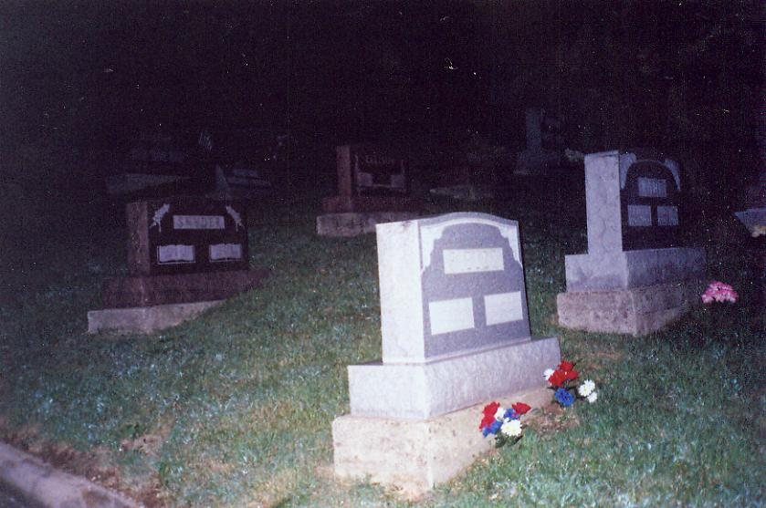

Germantown Cemetery, located at 11179 West Market Street (aka Route 725) in Germantown, Montgomery County, is haunted by the regular appearance of a ghostly Confederate soldier. How and why he ended up in such an ordinary northern graveyard is not known, but it's a story that people in this small Dayton suburb tell fairly often. Since the cemetery was founded in 1849 he must have been one of the first people buried there.
Unlike the axe-murdering veteran who stalks Haines Cemetery in New Marshfield, Germantown's Civil War soldier seems almost polite. He's lost, it seems, and is doomed to spend eternity far from home. Is that the only reason for his restlessness? Is he, like Private Benjamin Butler at Camp Chase, mourning the loss of his true love, the girl he left behind in the antebellum south?

It's hard to say which grave belongs to the mysterious Confederate, if he exists at all. (If you have any idea what his name is or where in the cemetery he lies, please do send me an e-mail and let me know.) Germantown Cemetery is a much larger plot of land than it appears from the road, stretching straight back from the main gate, over a rise, and finally surrounding a cul-de-sac at the end of the driveway. Throughout, new graves mingle with old in nearly every single section. Some are too old and worn down to even decipher, while brand new stones not far away feature laser-imprinted porcelain photographs of the deceased.
My own visit to the haunted graveyard in Germantown took place in the early summer of 2005 with Jenny, who accompanied me to several other Dayton-area locations as well. It was our intention to get there while the sun was still up, hang around reading tombstones while waiting for the sunset, and then explore the entire length of the place in the dark, hoping for some sort of ghostly encounter.

Unfortunately, I made a big mistake, and while we parked at the very back of the driveway and waited for the sun to go down, the cemetery caretaker arrived, did something in his gatehouse hut, and closed and chain-locked the front gate on his way out. Jenny and I were in for the night, it seemed, since the ground on either side of the gate dipped into a drainage ditch far too steep for my big boat of a Chrysler.
While we tried to figure a way out of this situation we did walk the length of Germantown Cemetery, in the dark, snapping photos and keeping an eye out for the Confederate soldier or any other ghosts who might be out among the tombstones. No ghosts appeared to us. Though the furthest reaches of the cemetery are relatively isolated and spooky enough, especially where it borders the woods, the nearby stretch of Route 725 is so well-lit and so active with convenience stores, gas stations, fast food restaurants, and traffic that it's hard to get much of a creepy vibe. Still, there might be some validity to the story; and if what they say is true, hauntings can happen anytime of day or night, in any setting.
Finally we had to cross the highway on foot and ask a local cop to call and have our car let out of the cemetery. (Lame, I know.) The police laughed politely at us for getting stuck inside and helped us without bothering us at all. Throughout our evening in Germantown we never encountered a ghost, Yankee or Rebel. If you know anything more about the legends or reality of Germantown Cemetery, such as who the soldier is or where his body lies, or if you or anyone you know has encountered him there, don't hesitate to drop me a line via e-mail and tell me about it.
Find-A-Grave: Germantown Cemetery
Rootsweb: Germantown Cemetery
Back
forgottenohio@yahoo.com